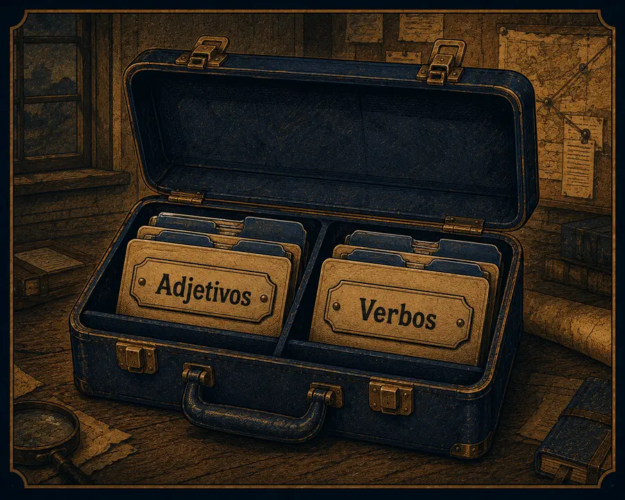

El Maletín de Herramientas: Detective Gramatical
Actividad 10.a — Micro-desafío descriptivo
Antes de analizar el texto original, intenta describir con tus propias palabras al León de Nemea: su aspecto, su fuerza, su peligrosidad.
0 caracteres
Actividad 10.b — Resaltado Interactivo
Elige una categoría gramatical y luego haz clic sobre las palabras del texto que correspondan a esa categoría. Vuelve a hacer clic para quitar la marca.
El enorme león de Nemea tenía una piel invulnerable y un feroz rugido. Cuando Hércules lo vio, el animal rugió y avanzó hacia él con una mirada salvaje. Hércules esquivó el primer ataque y finalmente estranguló a la bestia con sus brazos poderosos.
Clasificación — Maletín de Adjetivos y Verbos
Ahora arrastra cada palabra a la columna que corresponde. Si usas teclado, elige la columna en el menú desplegable de cada ficha.
🟨 Adjetivos
🟦 Verbos
